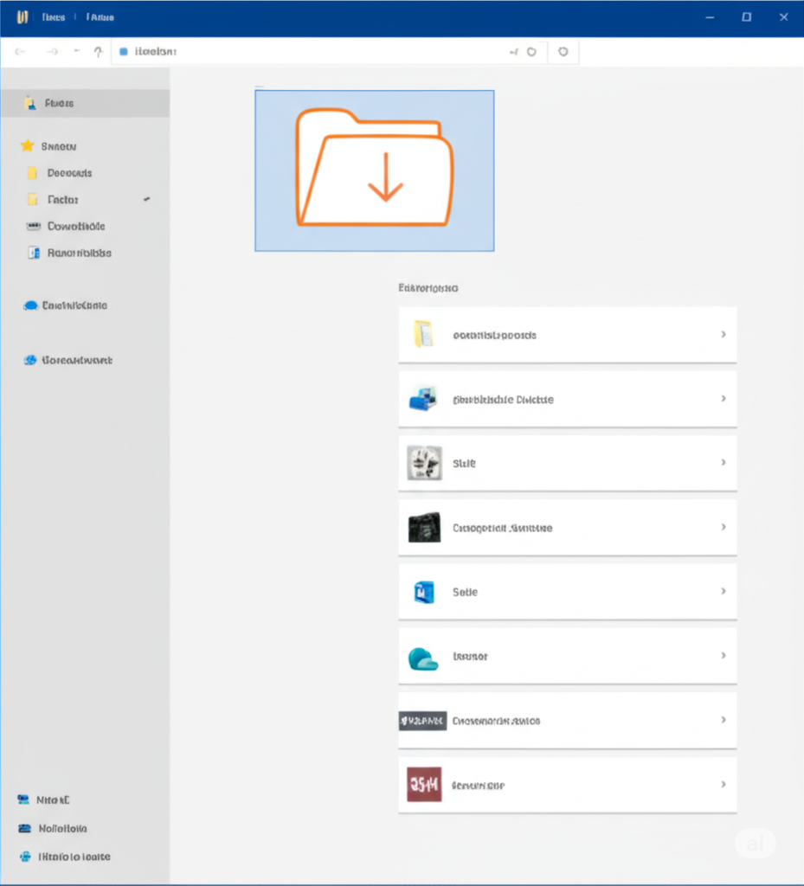
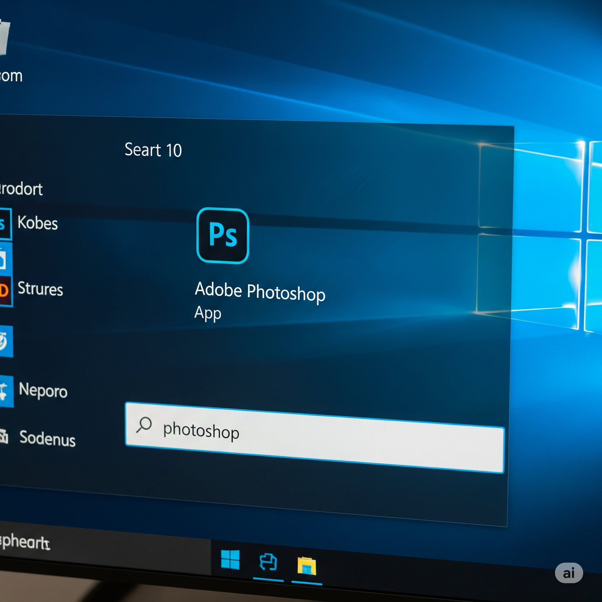
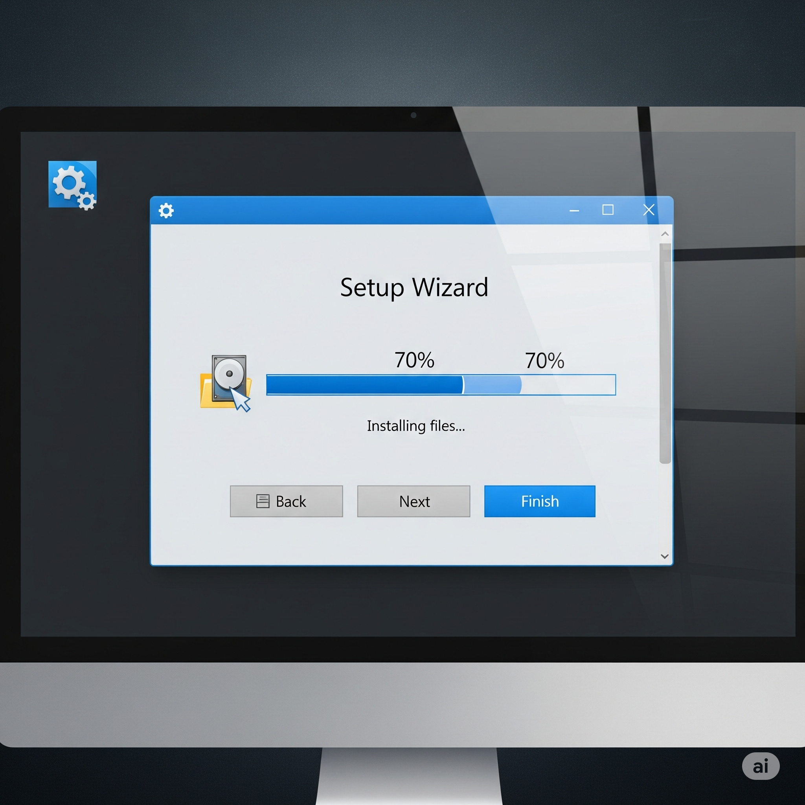
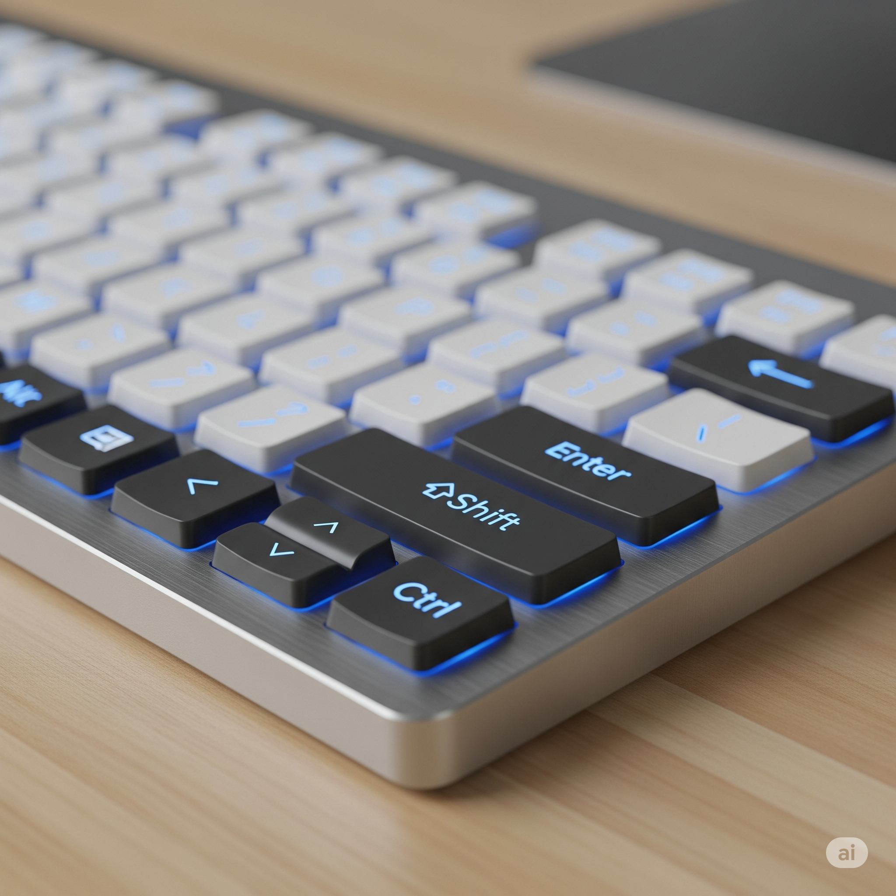
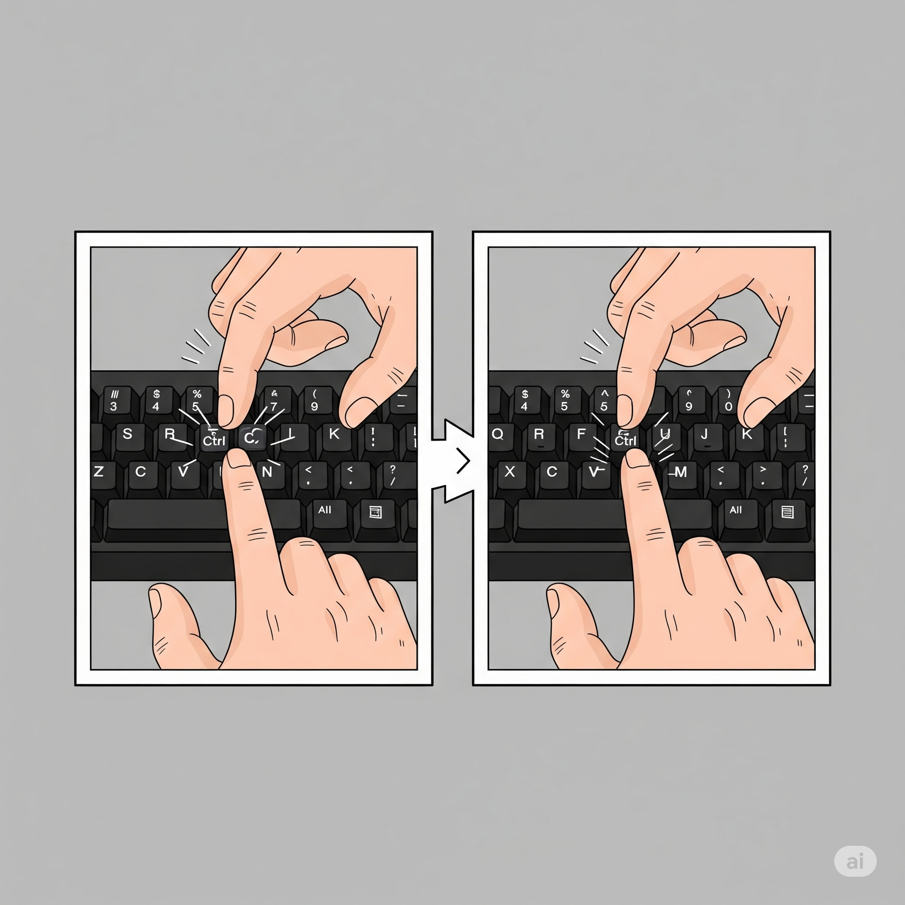
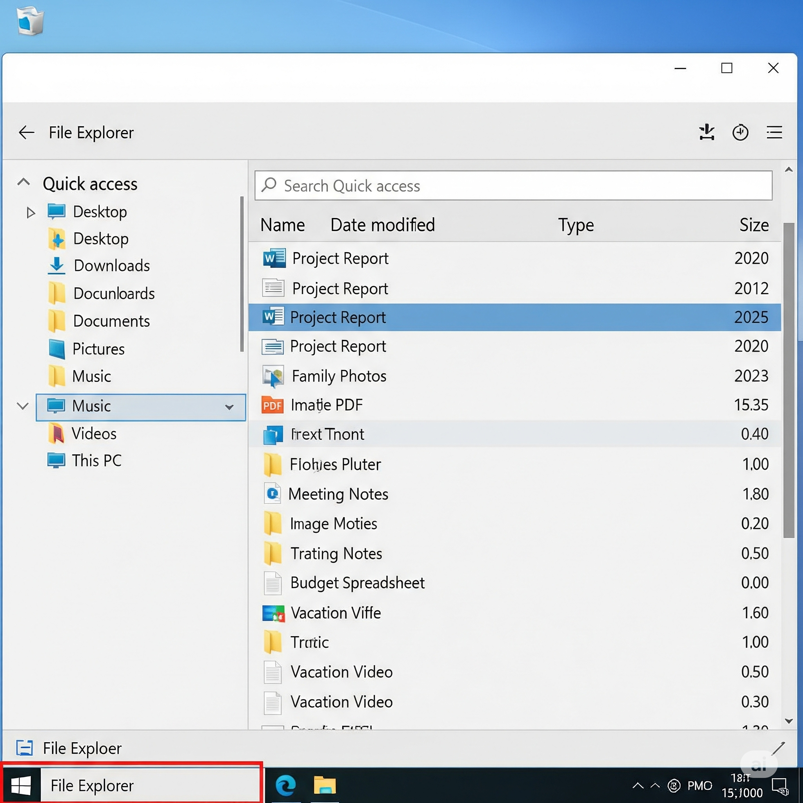
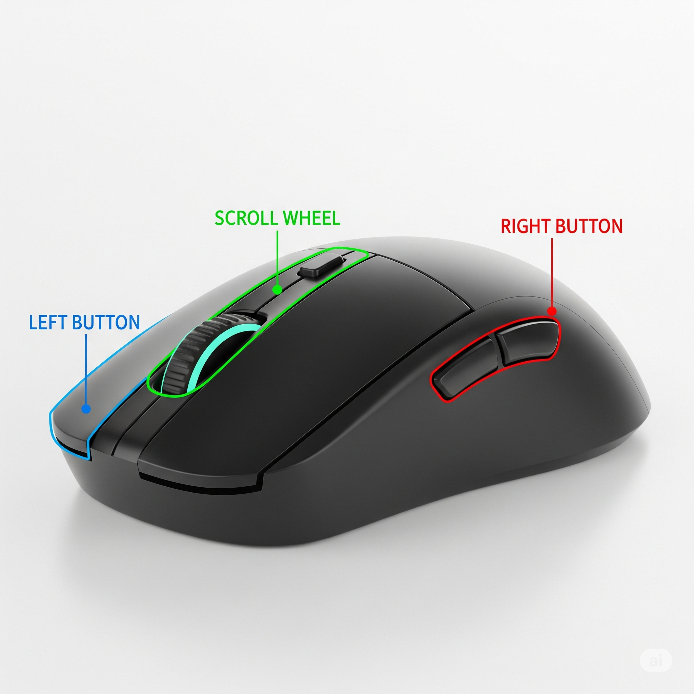

¡Bienvenido a esta guía! Aquí aprenderás los conceptos más importantes para usar tu computadora.
¿Cómo descargar un archivo?
Descargar un archivo es como guardar algo de Internet en tu computadora. Puede ser un documento, una imagen, un video, o un programa.
Pasos:
- Encuentra el enlace: Busca un enlace o un botón que diga "Descargar", "Download" o tenga el icono de una flecha hacia abajo.
- Haz clic: Simplemente haz clic en ese enlace o botón.
- Guarda el archivo: Tu navegador te preguntará dónde quieres guardar el archivo. Puedes elegir una ubicación como el Escritorio o la carpeta de Descargas.

Comprimir y descomprimir archivos
Comprimir es hacer un archivo o carpeta más pequeño, como si lo metieras en una caja. Esto es útil para enviar varios archivos juntos o para ahorrar espacio. Descomprimir es el proceso inverso, es sacar el contenido de esa "caja".
¿Cómo comprimir un archivo o carpeta?
Pasos:
- Selecciona: Haz clic derecho en el archivo o carpeta que quieres comprimir.
- Elige la opción: En el menú que aparece, busca una opción como "Enviar a" y luego "Carpeta comprimida (en zip)".
- Listo: Se creará un nuevo archivo con un ícono de cremallera o una pila de libros, con el mismo nombre y la extensión .zip.

¿Cómo descomprimir un archivo?
Pasos:
- Selecciona: Haz clic derecho en el archivo comprimido (que tiene la extensión .zip).
- Elige la opción: En el menú, busca y haz clic en "Extraer todo..." o "Extract All...".
- Elige la ubicación: Te preguntará dónde quieres guardar los archivos. Elige una carpeta y haz clic en "Extraer".

Programas: buscar, instalar y ejecutar
¿Cómo busco un programa?
Para encontrar un programa que ya tienes en tu computadora, usa la barra de búsqueda en el menú de inicio (botón de Windows). Simplemente haz clic y empieza a escribir el nombre del programa.

¿Cómo instalar un programa?
La mayoría de los programas se instalan con un archivo especial, generalmente con la extensión .exe o .msi.
Pasos:
- Ejecuta el instalador: Haz doble clic en el archivo de instalación que descargaste.
- Sigue los pasos: Lee y sigue las instrucciones en pantalla. A menudo tendrás que hacer clic en "Siguiente", "Aceptar" y "Finalizar".

¿Cómo ejecuto un programa?
Una vez instalado, hay varias formas de abrir un programa:
- Desde el Escritorio: Busca un icono en tu escritorio y haz doble clic en él.
- Desde el Menú de Inicio: Haz clic en el botón de inicio de Windows y busca el programa en la lista. Haz clic para abrirlo.
- Desde la Barra de Tareas: Si el programa está anclado a la barra de tareas en la parte inferior de la pantalla, haz clic en su icono una sola vez.
Uso del teclado
El teclado tiene teclas especiales que te ayudan a hacer más cosas. Aquí tienes las más comunes:
- Mayúscula (Shift): Se usa para escribir letras mayúsculas o para usar los símbolos que están encima de los números.
- Enter: Se usa para confirmar algo, ir a la siguiente línea en un texto o enviar un formulario.
- Barra espaciadora: Crea un espacio en blanco entre palabras o letras.
- Suprimir (Del) / Retroceso (Backspace): Se usan para borrar. "Retroceso" borra lo que está a la izquierda del cursor. "Suprimir" borra lo que está a la derecha.
- Control (Ctrl): Una tecla de "acción". Se usa con otras teclas para hacer atajos, como Ctrl + C para copiar.
- Tabulación (Tab): Mueve el cursor un espacio largo hacia la derecha, como para alinear texto. En formularios, te lleva al siguiente campo.
- Escape (Esc): Se usa para cancelar una acción, cerrar una ventana o salir de un programa a pantalla completa.

Copiar y pegar
Copiar es hacer una copia de un archivo, carpeta o texto. Pegar es poner esa copia en otro lugar.
Método 1: Clic derecho
Para copiar:
- Haz clic derecho en lo que quieres copiar.
- Selecciona "Copiar" en el menú.
Para pegar:
- Ve a la carpeta donde quieres poner la copia.
- Haz clic derecho en un espacio vacío.
- Selecciona "Pegar" en el menú.
Método 2: Atajos de teclado
Para copiar:
- Selecciona el archivo.
- Presiona Ctrl + C al mismo tiempo.
Para pegar:
- Ve a la carpeta donde quieres la copia.
- Presiona Ctrl + V al mismo tiempo.

El Explorador de Archivos
El Explorador de Archivos es como tu oficina virtual. Es el lugar donde encuentras y organizas todos los archivos y carpetas en tu computadora.
¿Cómo abrirlo?
Puedes hacer clic en el icono de la carpeta amarilla en la barra de tareas o presionar la tecla de Windows y la letra E al mismo tiempo.

Funciones básicas:
- Navegar: Haz doble clic en una carpeta para abrirla y ver su contenido. Usa las flechas de "atrás" y "adelante" en la parte superior para moverte entre las carpetas que has visitado.
- Crear carpetas: Haz clic derecho en un espacio vacío, selecciona "Nuevo" y luego "Carpeta".
- Mover archivos: Arrastra un archivo desde una carpeta a otra para moverlo.
Uso del ratón
El ratón te permite interactuar con todo lo que ves en la pantalla.
- Botón izquierdo: Es el botón principal. Se usa para seleccionar, abrir archivos o programas (haciendo doble clic) y para arrastrar objetos.
- Botón derecho: Cuando haces clic derecho, se abre un menú con opciones adicionales que puedes aplicar al objeto seleccionado.
- Rueda de desplazamiento (Scroll): Se usa para subir y bajar en una página web o documento de forma rápida y sencilla.
